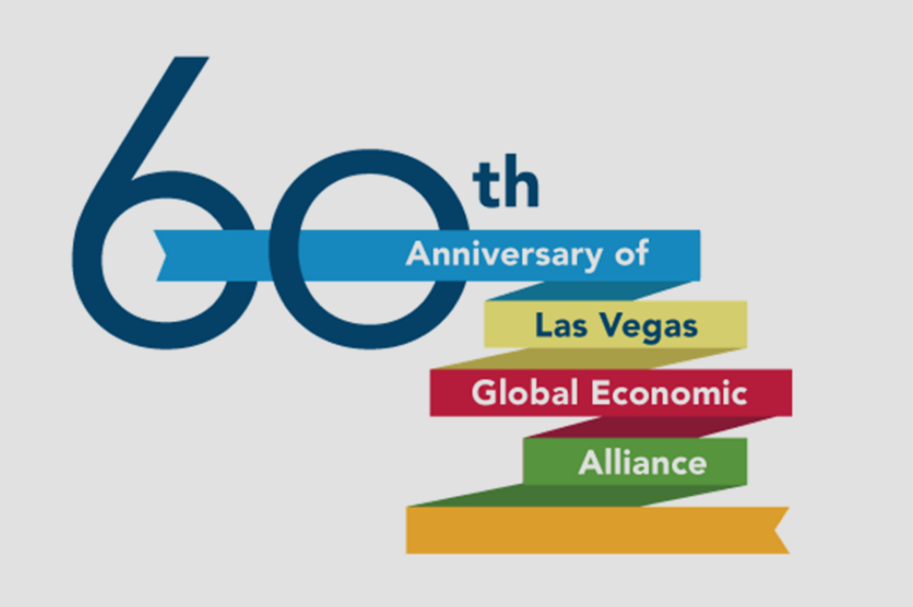
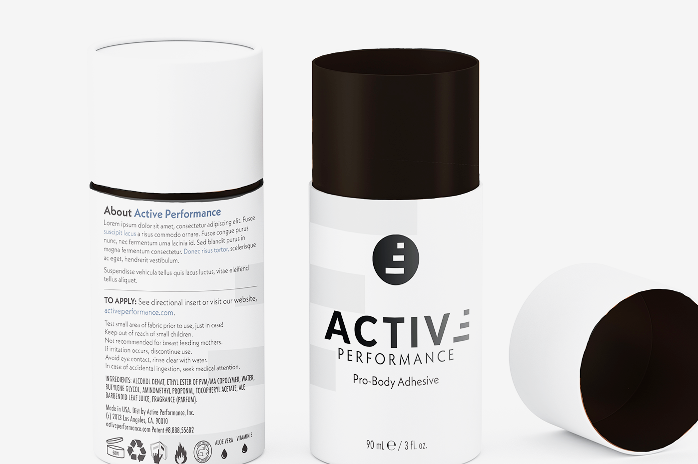
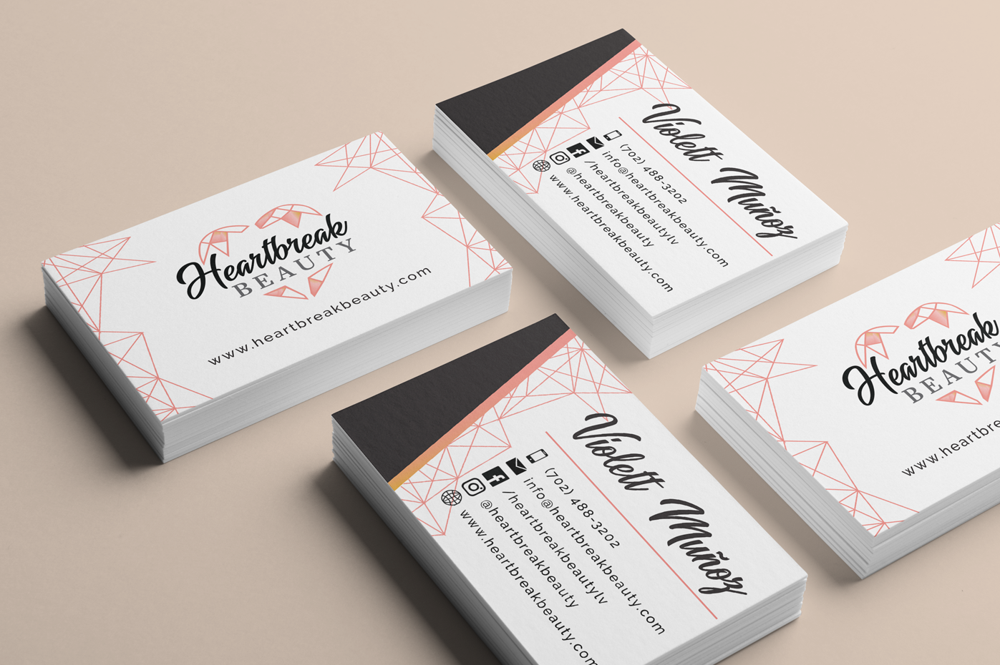
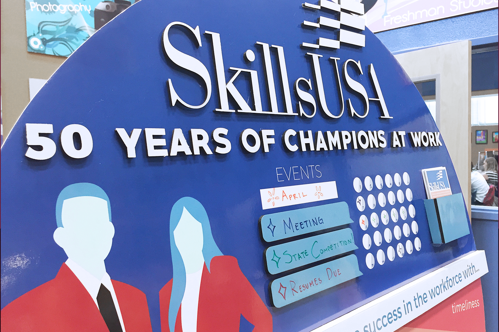
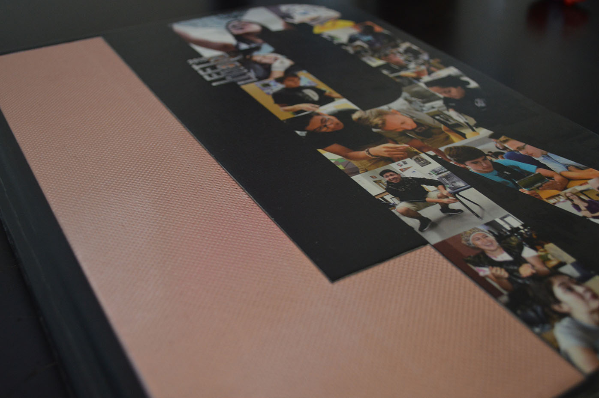
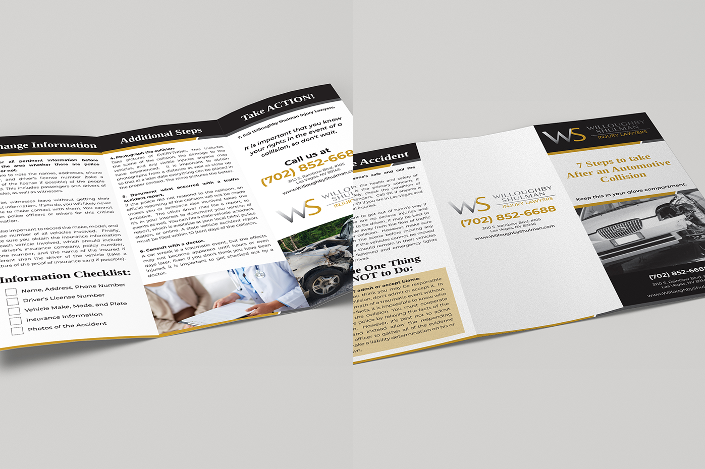
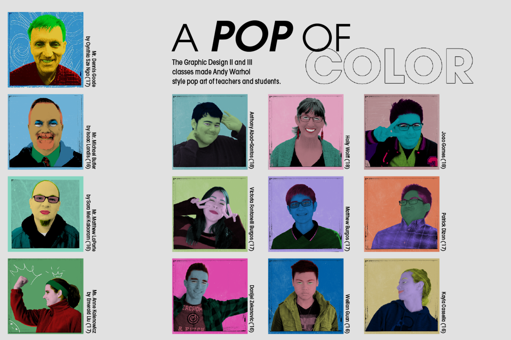
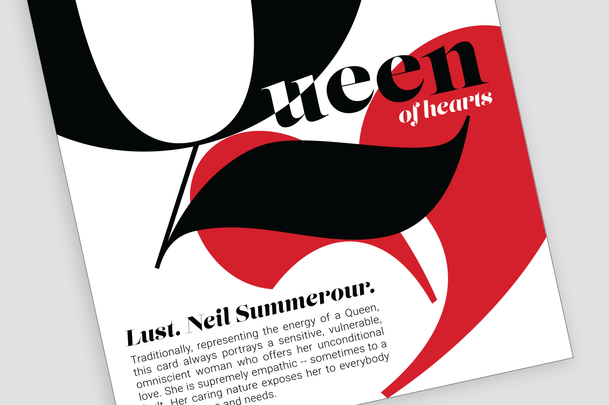

Below is a collection of images and projects I've created in my Graphic Design class. Click on the photo to view.

Portfolio

LVGEA 60th Anniversary Logo
January 2016
Tenets: Professional Communication, Use of Resources
This logo was created for the Las Vegas Global Economic Alliance. It shows the 60th anniversary while keeping some aspects of the original logo.

80 Years of Marketing Education Logo
November 2015
Tenets: Professional Communication, Use of Resources
This logo was designed for Melissa Scott from the Marketing Education department. It incorporates a ribbon wrapping around a pencil to show celebration and education.

Glitch in Japan
October 2015
Tenets: Use of Resources, Work Ethic
"Glitch in Japan" is a final product created in Adobe Photoshop CS6. This was derived from a creativity project and reflects themes of aesthetic and beauty.

SkillsUSA Promotional Bulletin Board
April 2015
Tenets: Professional Communication, Use of Resources, Content Knowledge, Work Ethic, Teamwork and Collaboration
This board was presented at the SkillsUSA Nevada State Conference and received a silver medal. It presents the theme "50 Years of Champions at Work" in an easy to read way.

The HOWL 2014-2015 Yearbook Cover
April 2015
Tenets: Use of Resources, Content Knowledge, Work Ethic
I created this yearbook cover for my school in Adobe Illustrator CS6. After a few revisions, the design was taken in by Jostens and reproduced with a textured copper material for the "L."

Hot Rides Specialty Spread
March 2015
Tenets: Writing Skills, Professional Communication, Work Ethic, Teamwork and Collaboration
"Hot Rides" is a specialty spread presenting students and their cars featured in The HOWL 2014-2015 yearbook. This spread won a Superior in the JEA/NSPA convention.

Periodic Table Specialty Spread
March 2015
Tenets: Writing Skills, Professional Communication, Work Ethic, Teamwork and Collaboration
The "Periodic Table of Siblings" is a specialty spread of students and their siblings. This spread is featured in The HOWL 2014-2015 yearbook and was also shown at the JEA/NSPA convention.

A Pop of Color Specialty Spread
March 2015
Tenets: Writing Skills, Professional Communication, Work Ethic, Teamwork and Collaboration
"A Pop of Color" is a specialty spread in The HOWL 2014-2015 yearbook. This spread shows images created by graphic design students inspired by Andy Warhol's art.

ACTE 2015 Logos
March 2015
Tenets: Professional Communication, Use of Resources
These logos were created for the Association for Career and Technical Education and submitted to the contests. The logos highlight Region V and incorporate the ACTE colors.
Back to top